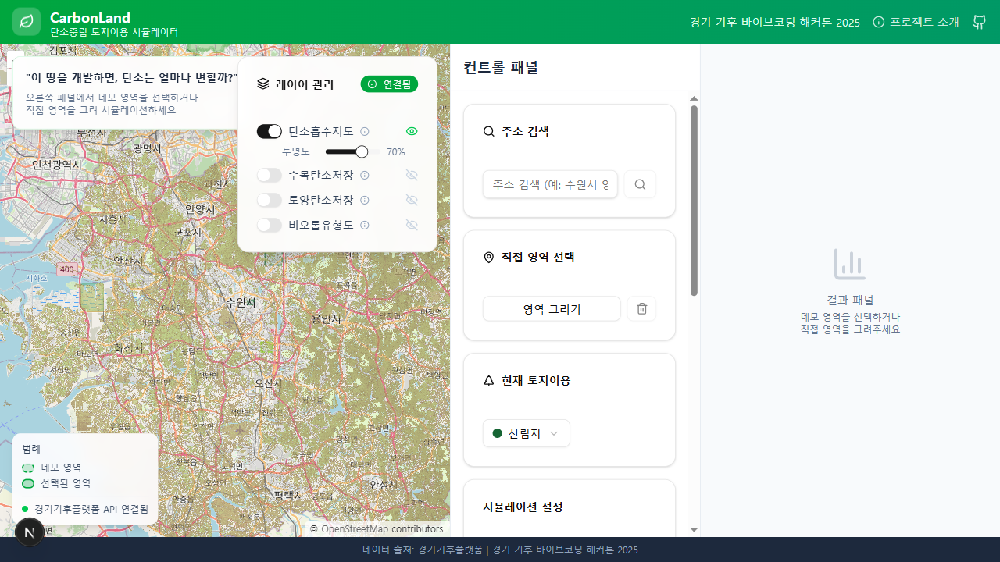
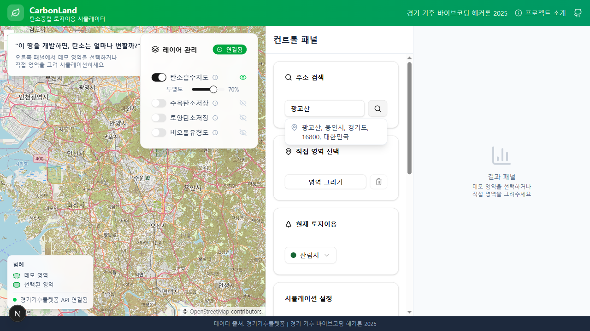
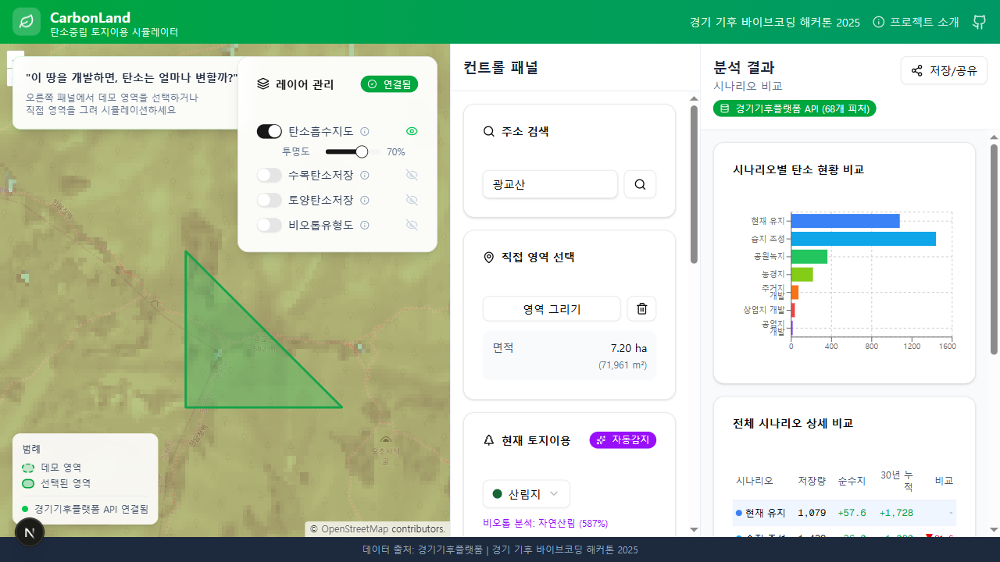
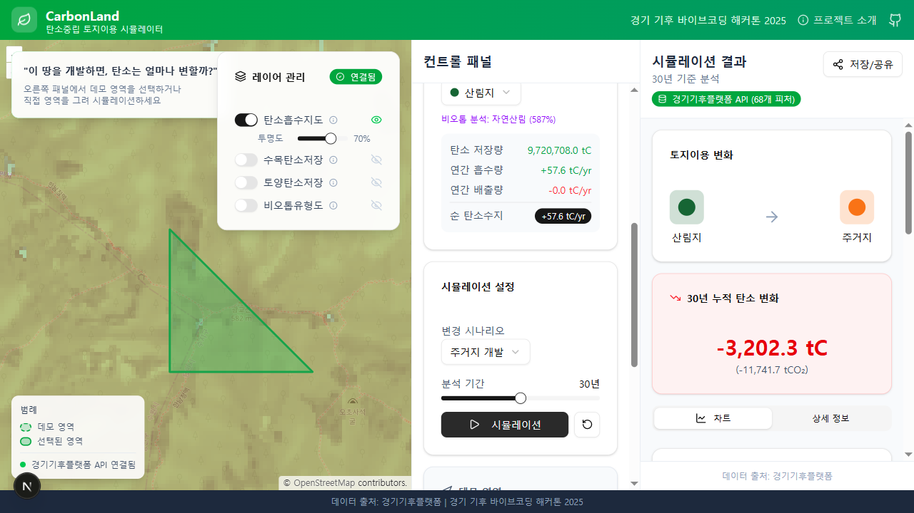
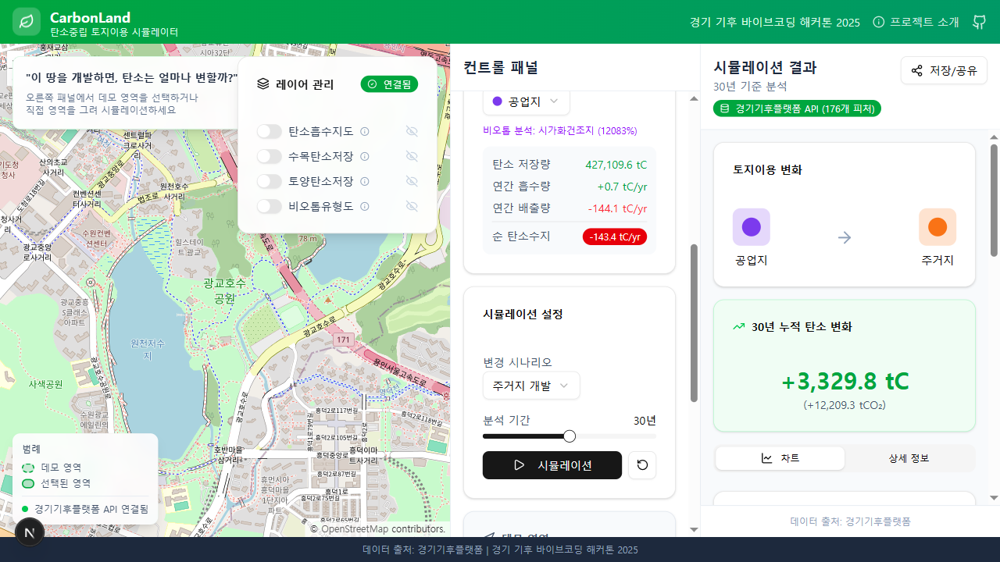
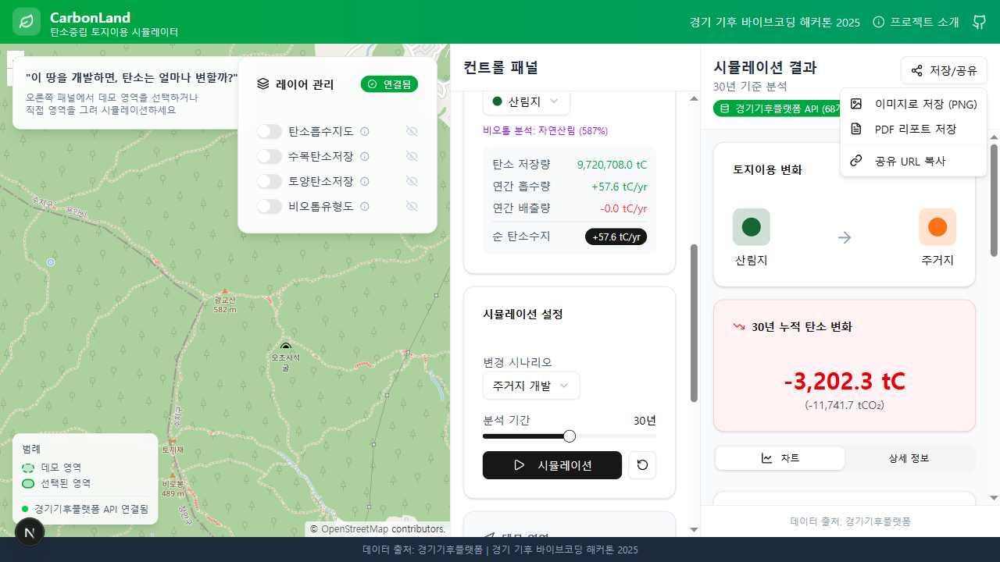
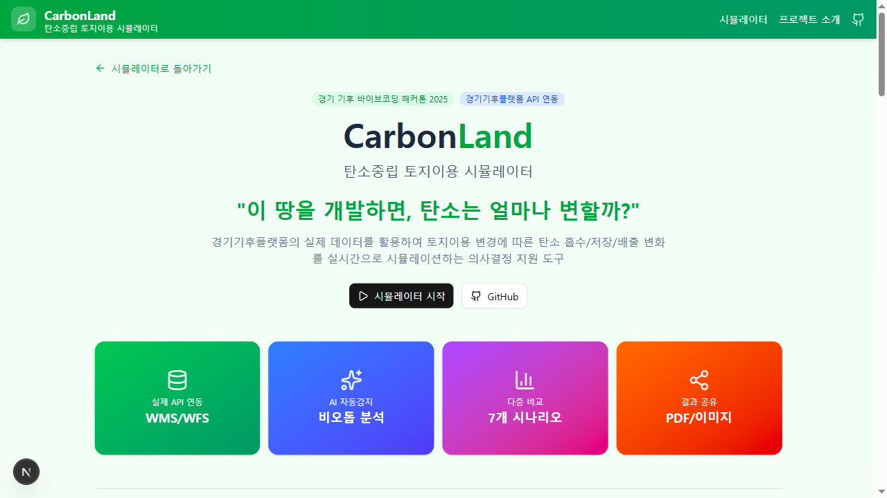

경기 기후 바이브코딩 해커톤 2025
| 시간 | 화면 / 액션 | 멘트 |
|---|---|---|
| 0:00 30초 1. 인트로 |

메인 페이지 (지도 화면)
|
안녕하세요, CarbonLand를 소개합니다.
"이 땅을 개발하면, 탄소는 얼마나 변할까?" 우리 주변의 녹지가 아파트가 되고, 산림이 공장이 될 때 탄소는 얼마나 줄어들까요? CarbonLand는 경기기후플랫폼의 실제 데이터를 활용해서 토지이용 변경에 따른 탄소 영향을 실시간으로 시뮬레이션하는 도구입니다. |
| 0:30 30초 2. 문제 정의 |
그대로 메인 페이지 유지
|
현재 개발사업 기획 시 탄소 영향을 파악하기 어렵습니다.
환경영향평가는 비용과 시간이 많이 들고, 시민들은 개발의 환경적 영향을 이해하기 어렵습니다. CarbonLand는 이 문제를 해결합니다. 누구나, 어디서든, 즉시 탄소 영향을 확인할 수 있습니다. |
| 1:00 40초 3. 주소 검색 |

컨트롤 패널 - 주소 검색
|
먼저 분석하고 싶은 지역을 찾습니다.
"광교호수공원"을 검색해볼게요. 이 근처에 개발 예정 부지가 있다고 가정하겠습니다. (결과 선택 후) 광교호수공원 주변으로 지도가 이동됩니다. |
| 1:40 40초 4. 영역 그리기 |

광교호수공원 북쪽 산림 지역 선택
|
이제 분석할 영역을 직접 그려보겠습니다.
'영역 그리기' 버튼을 클릭하고... 호수공원 북쪽의 녹색 산림 지역을 사각형으로 선택합니다. (4번 클릭 후 더블클릭으로 완료) 보시면 '자동감지' 배지가 뜨죠? 경기기후플랫폼 WFS API가 이 영역을 분석해서 "산림"으로 자동 감지했습니다. |
| 2:20 30초 5. 시뮬레이션 |

시뮬레이션 설정 및 실행
|
이 산림 지역에 아파트 단지를 개발한다고 가정해볼게요.
변경 시나리오에서 "주거지 개발"을 선택하고, 분석 기간은 30년으로 설정합니다. (버튼 클릭) 시뮬레이션을 실행하면... |
| 2:50 50초 6. 결과 분석 |
결과 패널 (스크롤하며 설명)
|
결과가 나왔습니다.
즉시 배출량 - 산림을 제거할 때 방출되는 탄소입니다. 순 탄소수지가 마이너스로 바뀌었죠? 탄소를 흡수하던 땅이 배출하는 땅으로 바뀐 겁니다. 이게 어느 정도냐면... 30년생 소나무 수천 그루가 흡수하는 양이고, 승용차 수천 대의 연간 배출량입니다. 아래 전체 시나리오 비교를 보시면, 7개 시나리오를 한눈에 비교할 수 있습니다. |
| 3:40 25초 7. WMS 레이어 |

레이어 패널 - 탄소흡수지도
|
경기기후플랫폼의 실제 데이터를 지도에서 직접 볼 수도 있습니다.
탄소흡수지도 레이어를 켜면... 녹색이 진할수록 탄소 흡수량이 높은 지역입니다. |
| 4:05 25초 8. 저장/공유 |

결과 패널 - 저장/공유 버튼
|
분석 결과는 저장하고 공유할 수 있습니다.
이미지, PDF 리포트, URL 공유까지... 회의 자료나 보고서에 바로 활용할 수 있습니다. |
| 4:30 30초 9. 마무리 |

프로젝트 소개 페이지 (/about)
|
정리하면, CarbonLand는
1. 경기기후플랫폼 API를 실제로 연동해서 2. 비오톱을 자동 감지하고 3. 7개 시나리오를 비교할 수 있으며 4. 결과를 저장/공유할 수 있습니다. 공무원, 개발사업자, 시민 누구나 개발의 탄소 영향을 쉽게 이해할 수 있는 도구입니다. 감사합니다. |